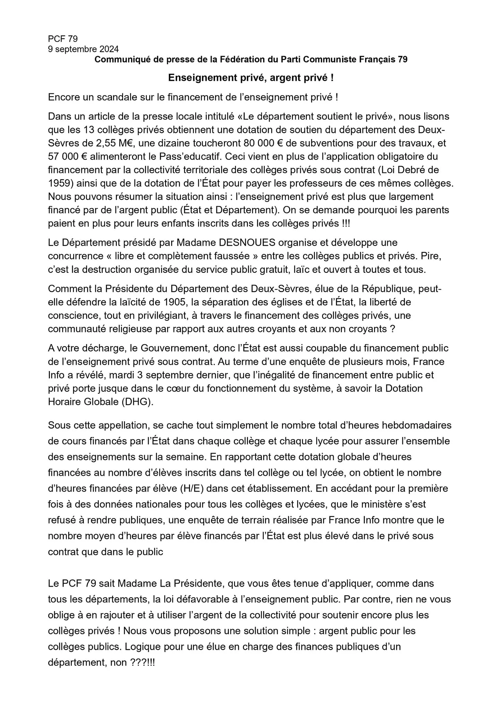

Communiqué du PCF 79
« Argent public pour les collèges publics ! » Notre communiqué de rentrée
Date indiquée par Facebook · 11 septembre 2024
Repères éditoriaux
Le 9 septembre 2024, nous avons interpellé le conseil départemental des Deux-Sèvres sur les aides supplémentaires aux collèges privés. Notre communiqué demande que l’argent public aille aux collèges publics. Sa version intégrale accompagne l’image relayée sur Facebook.
Texte conservé avec la publication
ARGENT PUBLIC POUR LES COLLÈGES PUBLICS !
Lire le communiqué du 9 septembre 2024 en entier
PCF 79
9 septembre 2024
Communiqué de presse de la Fédération du Parti Communiste Français 79
Enseignement privé, argent privé !
Encore un scandale sur le financement de l’enseignement privé !
Dans un article de la presse locale intitulé «Le département soutient le privé», nous lisons
que les 13 collèges privés obtiennent une dotation de soutien du département des Deux-Sèvres de 2,55 M€, une dizaine toucheront 80 000 € de subventions pour des travaux, et
57 000 € alimenteront le Pass’educatif. Ceci vient en plus de l’application obligatoire du
financement par la collectivité territoriale des collèges privés sous contrat (Loi Debré de
1959) ainsi que de la dotation de l’État pour payer les professeurs de ces mêmes collèges.
Nous pouvons résumer la situation ainsi : l’enseignement privé est plus que largement
financé par de l’argent public (État et Département). On se demande pourquoi les parents
paient en plus pour leurs enfants inscrits dans les collèges privés !!!
Le Département présidé par Madame DESNOUES organise et développe une
concurrence « libre et complètement faussée » entre les collèges publics et privés. Pire,
c’est la destruction organisée du service public gratuit, laïc et ouvert à toutes et tous.
Comment la Présidente du Département des Deux-Sèvres, élue de la République, peut-elle défendre la laïcité de 1905, la séparation des églises et de l’État, la liberté de
conscience, tout en privilégiant, à travers le financement des collèges privés, une
communauté religieuse par rapport aux autres croyants et aux non croyants ?
A votre décharge, le Gouvernement, donc l’État est aussi coupable du financement public
de l’enseignement privé sous contrat. Au terme d’une enquête de plusieurs mois, France
Info a révélé, mardi 3 septembre dernier, que l’inégalité de financement entre public et
privé porte jusque dans le cœur du fonctionnement du système, à savoir la Dotation
Horaire Globale (DHG).
Sous cette appellation, se cache tout simplement le nombre total d’heures hebdomadaires
de cours financés par l’État dans chaque collège et chaque lycée pour assurer l’ensemble
des enseignements sur la semaine. En rapportant cette dotation globale d’heures
financées au nombre d’élèves inscrits dans tel collège ou tel lycée, on obtient le nombre
d’heures financées par élève (H/E) dans cet établissement. En accédant pour la première
fois à des données nationales pour tous les collèges et lycées, que le ministère s’est
refusé à rendre publiques, une enquête de terrain réalisée par France Info montre que le
nombre moyen d’heures par élève financés par l’État est plus élevé dans le privé sous
contrat que dans le public
Le PCF 79 sait Madame La Présidente, que vous êtes tenue d’appliquer, comme dans
tous les départements, la loi défavorable à l’enseignement public. Par contre, rien ne vous
oblige à en rajouter et à utiliser l’argent de la collectivité pour soutenir encore plus les
collèges privés ! Nous vous proposons une solution simple : argent public pour les
collèges publics. Logique pour une élue en charge des finances publiques d’un
département, non ???!!!

Sources
Archive rouge · export Facebook · AR-0002-FB-01297
À lire aussi · Rentrée scolaire 2024. « Urgence pour l’école publique ! »